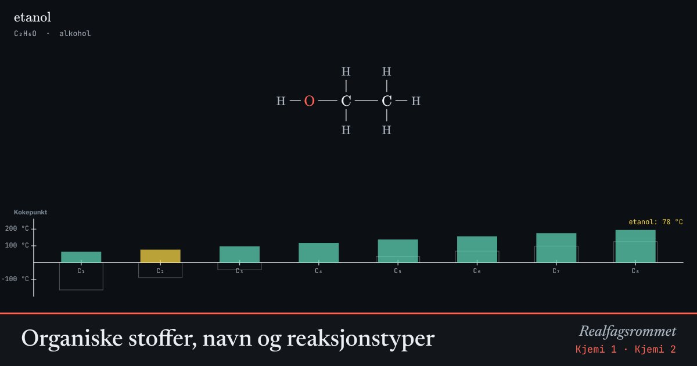

Organiske stoffer, navn og reaksjonstyper
Organiske stoffer er bygd av karbonkjeder. Den funksjonelle gruppen bestemmer egenskapene og endelsen i navnet. Se strukturformelen, navnet og hvordan kokepunktet endrer seg med kjedelengden.
Start animasjonen
Formler
Om animasjonen
Stammen i navnet forteller hvor mange karbonatomer det er: met-, et-, prop-, but-, pent-, heks-, hept-, okt-. Endelsen forteller stoffklassen: -an, -en, -ol, -al, -on, -syre, -amin.
Søylene viser kokepunktet. Lengre kjeder gir sterkere van der Waals-krefter og høyere kokepunkt. Alkoholer, syrer og aminer kan danne hydrogenbindinger og koker mye høyere enn alkanen med like mange karbonatomer (grå ramme).
Slå på «Vis en typisk reaksjon» for å se reaksjonstypene addisjon, eliminasjon, substitusjon og kondensasjon.
Prøv dette
- Hvorfor er etanol flytende ved romtemperatur når etan er en gass?
- Tegn strukturformelen til butan-2-ol. Hvilken stoffklasse og reaksjon gir den?
- Hva er forskjellen på et aldehyd og et keton?
- Hvilken ester dannes av etansyre og metanol? Hva lukter estere ofte av?
Kompetansemål
- Naturfag: Karbonforbindelser og karbonets betydning for livet
- Kjemi 1: Navnsetting i organisk kjemi
- Kjemi 2: Organiske reaksjonstyper
Mer om organisk kjemi og polymerer
- Karbonforbindelser og forbrenning
- Karboksylsyrer og estere: fra sur lukt til fruktig duft
- Polymerer: addisjon og kondensasjon